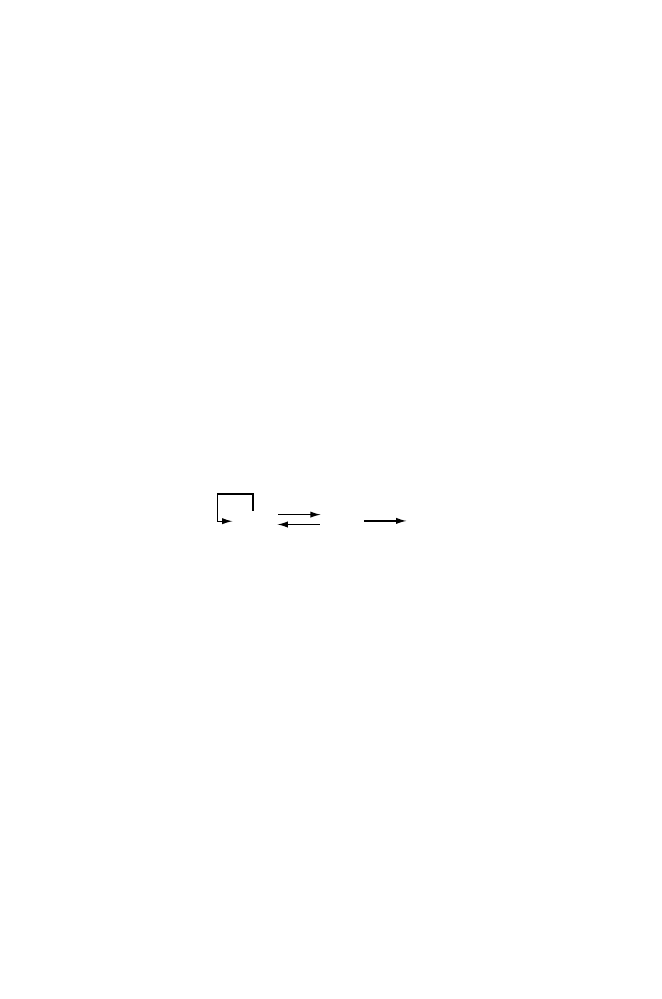

1.4 Information Storage and Transmission
19
1.4 Information Storage and Transmission
An important segment of computational biology deals with the analysis of
storage and readout of information necessary for the function and reproduc-
tion of cells. This information is used to code for structural proteins (e.g.,
cytoskeletal proteins such as actin and tubulin) and catalytic proteins (e.g.,
enzymes used for energy metabolism), for RNA molecules used in the transla-
tional apparatus (ribosomes, transfer RNA), and to control DNA metabolism
and gene expression.
An organism’s genome (defined at the beginning of the chapter) is, ap-
proximately, the entire corpus of genetic information needed to produce and
operate its cells. As indicated above, eukaryotic cells may contain one, two, or
three types of genomes: the nuclear genome, the mitochondrial genome, and
the chloroplast genome (in plants). The vast majority of eukaryotes contain
both nuclear and mitochondrial genomes, the latter being much smaller than
the nuclear genome and confined to mitochondria. When one speaks of “the
X genome” (e.g., “the human genome”), the nuclear genome is usually the
one meant. Mitochondrial and chloroplast genomes in some ways resemble
genomes of the prokaryotic symbionts from which they were derived.
The information flow in cells (already alluded to above) is summarized
below.
DNA RNA protein
1
2
3
4
The processes are identified as follows:
1. DNA replication, where a DNA sequence is copied to yield a molecule
nearly identical to the starting molecule;
2. Transcription, where a portion of DNA sequence is converted to the cor-
responding RNA sequence;
3. Translation, where the polypeptide sequence corresponding to the mRNA
sequence is synthesized;
4. Reverse transcription, where the RNA sequence is used as a template for
the synthesis of DNA, as in retrovirus replication, pseudogene formation,
and certain types of transposition.
Most biological information is encoded as a sequence of residues in linear,
biological macromolecules. This is usually represented as a sequence of Roman
letters drawn from a particular alphabet. Except for some types of viruses,
DNA is used to store genomic information. RNA may be used as a temporary
copy (mRNA) of information corresponding to genes or may play a role in the
translational apparatus (tRNA, spliceosomal RNA, and rRNA). Proteins are
polypeptides that may have catalytic, structural, or regulatory roles.